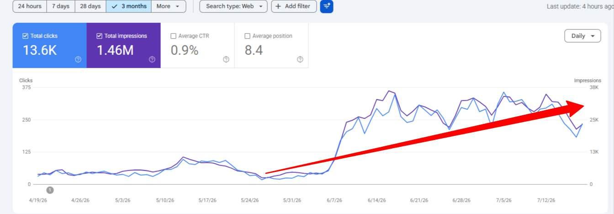
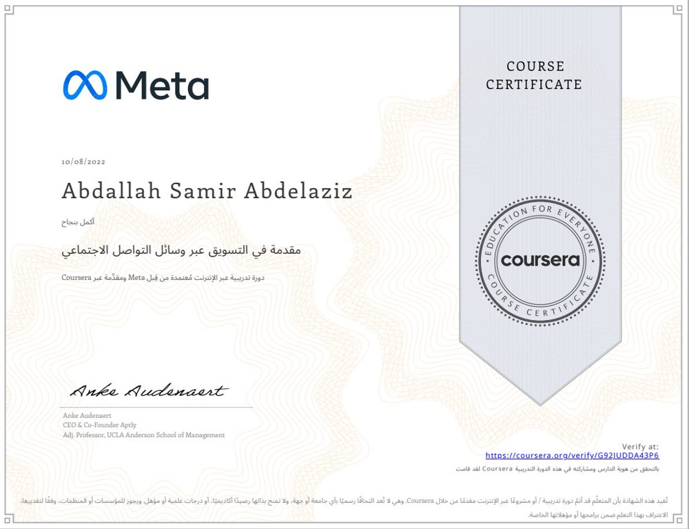

عيادة عيون · السعودية · 6 أشهر
موقع طبيب عيون
الهدف: جلب مرضى أكثر لموقع العيادة من جوجل.
ما فعلته: راجعت أداء الموقع والكلمات والصفحات، وأجريت التحسينات المهمة، وتابعت الأثر في Search Console.
23.7K+النقرات
3.44M+مرات الظهور
6.9متوسط الترتيب

أنا عبدالله، متخصص SEO من مصر. أعمل منذ أكثر من ثلاث سنوات على مساعدة المواقع في مصر والسعودية والإمارات لتظهر عندما يبحث الناس عما تقدمه، وتحويل هذه الزيارات إلى عملاء فعليين.
 ★ +35 كلمة في أول 5 نتائج
★ +35 كلمة في أول 5 نتائجبعض المواقع التي عملت عليها


النتائج
هذه لقطات حقيقية من Search Console لمواقع عملاء. أخفيت الأسماء حفاظاً على خصوصيتهم. اضغط على أي صورة لتكبيرها.
الهدف: جلب مرضى أكثر لموقع العيادة من جوجل.
ما فعلته: راجعت أداء الموقع والكلمات والصفحات، وأجريت التحسينات المهمة، وتابعت الأثر في Search Console.
الهدف: أن يصل مكتب في جدة إلى عدد أكبر ممن يبحثون عن مساعدة قانونية.
ما فعلته: بحثت عن الفجوات في الصفحات والكلمات، ثم نفّذت التحسينات تدريجياً وبقيت أراقب البيانات.

الهدف: أن يظهر مكتب في الرياض في عمليات البحث التي يستخدمها عملاؤه فعلاً.
ما فعلته: أعدت العمل على المحتوى وصفحات الهدف لتطابق ما يكتبه الناس في جوجل، وواصلت التعديل بناءً على البيانات.

نبذة
أياً كان موضوع الموقع، الهدف واحد: أن يجد الشخص المناسب الصفحة المناسبة ويتخذ الخطوة التالية. لذلك لا يشغلني عدد الزيارات في حد ذاته بقدر ما يشغلني أن تتحول إلى اتصالات ومبيعات واستفسارات.
أبدأ بمعرفة ما يعطّل الموقع فعلاً: مشاكل تقنية أو صفحات ضعيفة أو كلمات ناقصة. ثم أصلحها وأكتب ما ينقص، وأرسل لك تقريراً بأرقام من Search Console وGA4 لترى بنفسك ما الذي تغيّر.
جزء كبير من عملي بالعربية، وهذا يصنع فرقاً أكبر مما يظن الناس. الناس يكتبون السؤال نفسه بلهجات وصياغات مختلفة، والصفحة التي تطابق صياغة واحدة فقط تخسر زواراً كثيرين. أضع هذا في حسابي عند اختيار الكلمات وكتابة الصفحات.
وأنا صريح فيما يستطيع الـ SEO فعله وما لا يستطيعه. هو ليس فورياً، ولا أحد يضمن المركز الأول، والخطة الجيدة تتفوق دائماً على الحيل السريعة. وإن كان موقعك يحتاج شيئاً آخر قبل الـ SEO فسأقول لك.
إن سبق أن تضررت من تجربة سيئة مع مختص SEO فأتفهم ترددك. لذلك أشرح كل خطوة بلغة بسيطة، وأريك الأرقام كل شهر، ولا أطلب منك أبداً أن تصدقني دون دليل.
وأحب أن تفهم ما يحدث في موقعك. لذلك أشرح لك الأرقام ببساطة، وأوضح لماذا اخترنا خطوة معينة قبل غيرها، وأترك لك القرار في النهاية.
الخبرة
أكتوبر 2025 – الآن
مايو 2025 – الآن
أبريل 2024 – أكتوبر 2025
الخدمات
اختر خدمة واحدة أو أكثر.
أفحص السرعة والفهرسة وبنية الموقع، وأصلح كل ما يمنع جوجل من قراءة موقعك جيداً.
أجد عمليات البحث التي يستخدمها عملاؤك فعلاً، وأخصص لكل واحدة صفحة تناسبها.
أكتب البريفات ونصوص الصفحات لتجيب كل صفحة عن السؤال الذي جاء به الزائر.
العناوين والروابط الداخلية والبيانات المنظمة، مضبوطة كما يجب.
روابط من مواقع موثوقة ومناسبة لمجالك، بلا اختصارات مشبوهة.
تقرير شهري واضح من GA4 وSearch Console، مع متابعة ظهورك في AI Overviews.
كتابة المحتوى
الترتيب الجيد لا يفيد إن لم تقنع الصفحة الزائر. أكتب صفحات تشرح العرض بوضوح، وتجيب عن شكوك الناس، وتجعل الخطوة التالية واضحة.


علامات
إن وجدت نفسك في واحدة من هذه الحالات فغالباً هناك ما يستحق الإصلاح.
طريقة العمل
لا غموض ولا مصطلحات معقدة. هكذا يسير مشروع عادي.
أنظر إلى موقعك كما تنظر إليه جوجل. هل يمكن زحفه وفهرسته؟ هل هو سريع؟ هل بنيته منطقية؟ وأتحقق أيضاً من الصفحات التي تجلب زيارات فعلاً وتلك التي لا يراها أحد.
بعدها أبحث عما يكتبه عملاؤك في جوجل وما يتصدر به منافسوك. والناتج قائمة بعمليات بحث تستحق العمل عليها، وكل واحدة مربوطة بصفحة تجيب عنها.
أحوّل كل ذلك إلى خطة قصيرة مرتبة حسب الأولوية: ما الذي نصلحه أولاً، وما الذي نكتبه، وما الذي يمكن تأجيله. تراها قبل أن يتغير أي شيء، وأنت من يقرر ما يُنفَّذ.
ثم أبدأ العمل: إصلاحات تقنية وتحسين صفحات ومحتوى جديد وروابط داخلية. وإن كان هناك مطوّر، أرسل له تعليمات واضحة حتى لا يضيع شيء في الطريق.
كل شهر يصلك تقرير بسيط من Search Console وGA4: ما الذي تحرك وما الذي لم يتحرك وما الذي سأغيّره بعد ذلك. الـ SEO لا ينتهي أبداً، لذلك نواصل التحسين اعتماداً على البيانات.
الـ SEO عمل بطيء. الإصلاحات التقنية الصغيرة قد تظهر نتيجتها خلال أسابيع، لكن أغلب المواقع تحتاج من ثلاثة إلى ستة أشهر حتى تصنع التغييرات فرقاً واضحاً في النقرات والاستفسارات. وعمليات البحث التنافسية تحتاج وقتاً أطول. ومن يعدك بالمركز الأول خلال أسبوع فهو يبيعك وهماً.
ما تتوقعه مني هو تقدم ثابت تراه في الأرقام، وشرح واضح بلغة بسيطة، وجواب صريح حين لا ينجح شيء.
أخطاء شائعة
أغلب المواقع تشترك في عدد قليل من المشاكل. هذه أكثرها تكراراً.
كثيراً ما تُبنى الصفحات حول الكلمات التي تستخدمها الشركة داخلياً، لا الكلمات التي يكتبها العملاء. البحث الجيد يصلح هذا قبل أن تُكتب صفحة واحدة.
وضع كل الخدمات في صفحة واحدة يصعّب الأمر على جوجل وعلى الزائر. كل خدمة أو موضوع يستحق صفحة مستقلة تجيب عن سؤال واحد بشكل جيد.
أغلب الزيارات تأتي من الهواتف. موقع يحتاج خمس ثوانٍ ليفتح يخسر الزائر قبل أن يقرأ كلمة، وجوجل تلاحظ ذلك أيضاً.
الصفحات القصيرة التي تكرر ما يقوله الجميع نادراً ما تتصدر. أما المحتوى المفيد والمحدد المكتوب لعملائك الحقيقيين فيتصدر.
الصفحة التي لا يشير إليها شيء يصعب على جوجل العثور عليها، ويتوه الزائر. بنية روابط نظيفة تفيد الاثنين.
مواقع كثيرة تعمل سنوات دون إعداد Search Console وAnalytics بشكل صحيح، فلا يعرف أحد ما الذي ينجح. وهذا غالباً أول ما أصلحه.
المحتوى نفسه على عدة روابط يوزّع قوته بينها. التحويلات والوسوم المرجعية تعيده إلى مكان واحد.
قد تتصدر الصفحة ولا تجلب شيئاً إن لم يكن فيها زر أو رقم هاتف أو نموذج واضح. الترتيب يجلب الزيارة، والصفحة هي التي تُنهي المهمة.
الأدوات
جوجل
SEO
أنظمة المواقع والمتاجر
الشهادات
اضغط على أي شهادة لتكبيرها.

Easyt.online · يونيو 2025

Easyt.online · مارس 2025

Easyt.online · يونيو 2025

University of Michigan · Coursera · يناير 2023


أسئلة شائعة
عادة من ثلاثة إلى ستة أشهر لتظهر فروق واضحة، وأحياناً أقل في الإصلاحات التقنية. يعتمد ذلك على شدة المنافسة وحجم ما يحتاج إصلاحاً. وسأعطيك تقديراً واقعياً بعد المراجعة الأولى.
لا، واحذر ممن يضمن ذلك. جوجل هي التي تحدد الترتيب لا أنا. ما أعدك به خطة واضحة وعمل دقيق وتقارير صريحة، والأرقام تبيّن هل ينجح العمل أم لا.
مواقع الشركات والمدونات والمتاجر الإلكترونية ومواقع الخدمات والأدلة وغيرها. التفاصيل تختلف من موقع لآخر، لكن الأساس واحد: أن تفهم جوجل الموقع، وأن يجد الزائر ما جاء من أجله.
تعتمد على حجم الموقع وكمية العمل المطلوبة، لذلك لا أحدد سعراً ثابتاً قبل أن أراه. أرسل لي الرابط وأخبرني بهدفك، وسأعود إليك بعرض واضح.
صلاحية الوصول إلى Google Search Console وAnalytics إن كانا موجودين، ومحادثة قصيرة عن نشاطك وعملائك، وأسماء المنافسين الذين تتابعهم. وإن لم يكن شيء من ذلك مفعّلاً فأساعدك على إعداده.
لا. أريك ما أنوي تغييره ولماذا قبل أن ألمس أي شيء. توافق أنت، ثم أنفّذ التغييرات أو أرسل تعليمات واضحة لمطوّرك.
يصلك تقرير شهري بالنقرات ومرات الظهور والترتيب والزيارات، مشروحاً بكلمات بسيطة. والهدف دائماً مزيد من الاتصالات والمبيعات والاستفسارات، فننظر فيها أيضاً لا في الترتيب وحده.
نعم، جزء كبير من عملي على مواقع عربية، وأعمل بالإنجليزية أيضاً. وأتعامل مع المواقع ثنائية اللغة، بما فيها الإعدادات التي تحتاجها جوجل لتعرض النسخة المناسبة للشخص المناسب.
هي ملخصات الذكاء الاصطناعي التي تعرضها جوجل أعلى بعض النتائج. الصفحات التي تجيب عن الأسئلة بوضوح وتكون منظمة جيداً أكثر عرضة لأن تُستخدم فيها، لذلك أكتب المحتوى وأنظمه وفي بالي هذا.
بعض المواقع تكفيها مراجعة وإصلاح مرة واحدة مع خطة. وأغلبها يستفيد أكثر من عمل مستمر، لأن البحث يتغير باستمرار والمنافسون ينشرون دائماً. يمكننا أن نبدأ صغيراً ونقرر بعد الأشهر الأولى.
تركيزي على البحث. أعمل على موقعك الحالي، في ووردبريس أو أي منصة تستخدمها، أو بجانب مطوّرك. وإن كانت هناك إعادة تصميم مخطط لها فيسعدني أن أنصح في بنية الموقع حتى لا تخسر الزيارات التي لديك.
Search Console وGA4 لمعرفة الحقائق، وSemrush وAhrefs وScreaming Frog للبحث والتدقيق، وووردبريس أو المنصة التي يعمل عليها موقعك لتنفيذ التغييرات.
نعم. أفحص المشاكل التقنية وتحديثات جوجل والروابط المفقودة والصفحات التي تغيرت، وأعرف ما الذي تحرك، ثم أضع خطة استعادة. الانخفاض المفاجئ عادة له سبب يمكن العثور عليه.
مع الاثنين. أستطيع تولي جانب الـ SEO لعملاء وكالة بهدوء في الخلفية، أو العمل مباشرة مع صاحب العمل. بحسب ما يناسبك أكثر.
بقدر ما تحب، لكني أبقي الأمر خفيفاً: مكالمة قصيرة في البداية، وتقرير شهري بملخص، ورسالة كلما ظهر أمر مهم.
التقييمات
يكفي سطران صريحان. رأيك يفيد من يفكّر في التعامل معي.
من أناسب
أعمل بشكل أفضل مع من يريد شريكاً حقيقياً لا خدمة عابرة: أصحاب أعمال وفرق تسويق ووكالات تحتاج شخصاً يُعتمد عليه في جانب البحث. لا يلزمك أن تفهم الـ SEO. يكفي أن يهمك أن يجدك الناس، وأن تكون مستعداً للعمل بما نكتشفه.
إن كنت تريد نتائج بحلول الأسبوع القادم فلست الخيار المناسب على الأغلب. وإن كنت تريد موقعاً يصبح بثبات أول ما يراه الناس حين يبحثون عما تقدمه، فلنتحدث.
لست متأكداً أنك تحتاج SEO أصلاً؟ أرسل لي رابطك واسأل. غالباً تكفي مراجعة سريعة لأعرف هل الأمر يستحق، وسأقول لك ذلك حتى لو كانت الإجابة لا.
أرسل لي رابط موقعك وأخبرني بما تريد تحقيقه. سأنظر فيه وأقول لك بصراحة ما الذي سأبدأ به.